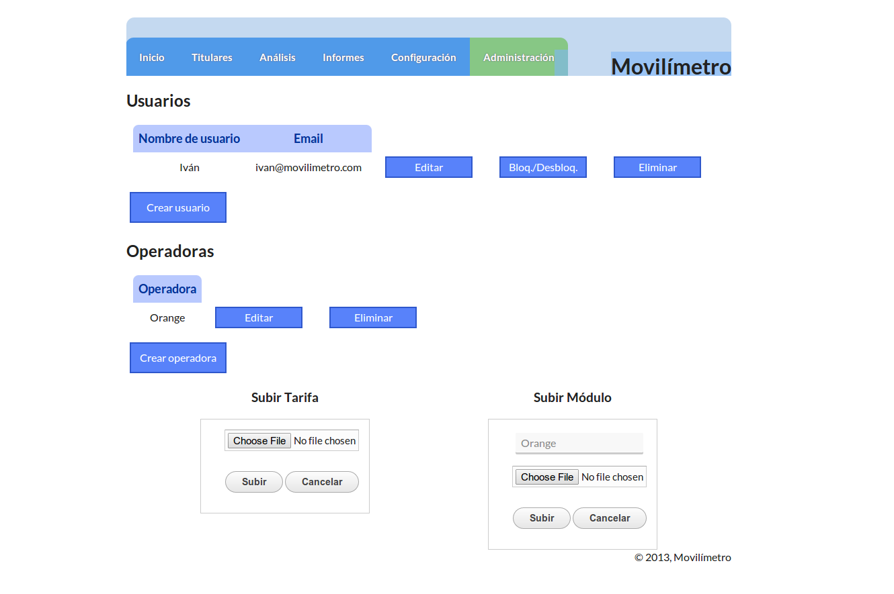
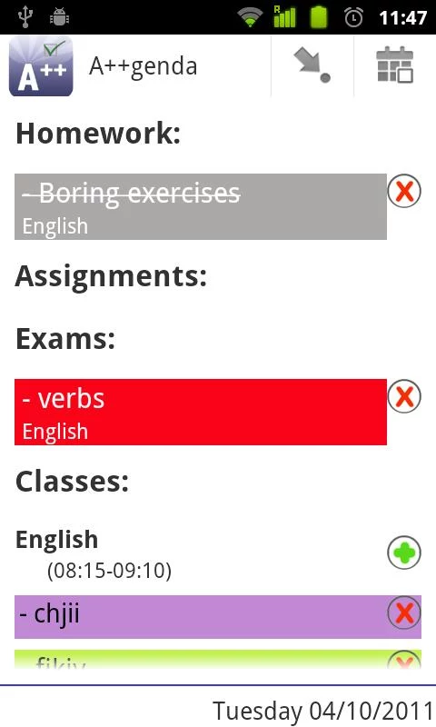

Work Experience and Projects
Co-organizer and Spanish Ambassador at Europe Code Week
August 2013-Present
Technology is shaping our lives, but too few have the ability to decide for what and how we use it. Europe Code week is an initiative to promote interest in coding throughout Europe. This initiative was launched by Neelie Kroes' Young Advisors with the support from DG Connect at the European Commission.
We did a first edition in 2013 with over 300 events all around Europe, and we're working hard on doing much better in 2014.
Team member at Vida
September 2013
For disease control and prevention, we worked on an Android app and an interactive map where users could see localized diseases all around the Earth, with information for each disease. It's an outsourced map, so anyone could add a new disease from the application.
With @iamzenitram, we developed this during the BYND 2015 hackathon, organised by ITU (International Telecommunication Union) in Costa Rica
Achievements
- 3rd prize at the BYND 2015 hackathon
Team member at Smads
September 2013
Smart cities have an enormous potential in advertisement, and it’s important that we make use of it. Ads have gotten much more intelligent over the past few years, but in the world of Internet of Things, we can take this to a whole new level. We propose a system in which the ads displayed to a user are chosen based on the information received from different kinds of sensors like a temperature, proximity or humidity sensor.
With @izqui97, @alexdev_ and @bvaldivielso, we developed this during the FIWARE hackathon at Campus Party Europe 2014 in London
Achievements
- 1st prize at the FIWARE hackathon
- Young Developers award at the FIWARE hackathon
- 2nd prize for Smart Cities at the Hack For Something Better Hackathon
Founder at Holalabs
September 2011-Present
We develop Internet based Software. We develop brilliant ideas. We connect the Internet with Mobile.
We worked on two awesome products: holadesk, the first distributed desktop, and holaIO, a library for mobile devs to reuse web content in their apps.
Achievements
- Entrepreneur of the month in La Region de Murcia
- Selected for Pitch in Berlin v4 by HackFwd
- Participated in Yuzz, but couldn't get a prize because I was underage
Founder and Organizer of GDG Murcia
December 2010-Present
Initially Murcia GTUG (Google Technology User Group), and now GDG Murcia (Google Developer Group), was one of the first in Spain, and it's now the main developer group in the Region of Murcia. We have done many events around all kinds of technologies with up to 150 attendees, with dozens more in waiting lists.
Achievements
- Organized 20 events
- Organized and HTML5 Bootcamp with Startup Weekend
- Organized a Mobile Hackathon
- Organized a Google Devfest
- Invited to Google IO 2012 and 2013

Freelance at Movilimetro
December 2012-January 2013
A website and an Android Application which recommends the user their ideal tariff based on how they use their phone.

A++genda
August 2011-September 2011
An Android Application to use as a school agenda. You could organize your subjects, exams, homework and assignments, control your marks, and see your timetable.
Freelance at WebGaffe
July 2011-September 2011
I developed an initial prototype of this project using Node.JS and MongoDB. WebGaffe is a place to correct mistakes you find around the Internet.
Work Experience at Duedil
July 2011
A week work experience at a great startup. I've been helping out with front end problems and prepared a proposal for their mobile strategy.
Work Experience at rippll
July 2011
I did a work experience with this company and learnt how all their technology worked. I also did a small Android application asked by the company to show them how they could use their technology on Android with the problem that there are different screen sizes.
Work Experience at Appfly
July 2011
I did a short work experience in this web and mobile development startup. I spent my time with the Ruby and the iOS developers.
Editor at Droiders
January 2011 – August 2011
Developing applications since 2008, they develop for Android, iOS, Windows Phone and now, Google Glass. I worked on their Spanish Android blog where you could find the latest Android news, tips, tutorials etc.
Editor at android.es
September 2010 – January 2011
One of the most important Android blogs in Spain. It has 40000+ followers on Twitter and thounsands of visits a day
I'm an 18 year old Android and Web developer, who believes that Free Software is the way to go
I founded GDG Murcia and Holalabs
Young Advisor to Vice-President of the European Comission, Neelie Kroes
I occasionally give talks and have been interviewed by different media
I love travelling, rollerskating, basketball, tennis, music and reading and watching fiction
When I visit a new city, I make sure I get lost in it so I can learn my way around and discover nice places
- Android <3
- HTML5 <3
- CSS3 <3
- Javascript <3
- Node.JS <3
- Python <3
- Java
- PHP
- C++
- MongoDB <3
- MySQL
- Linux <3